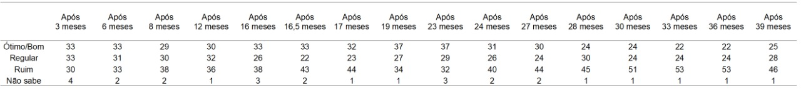
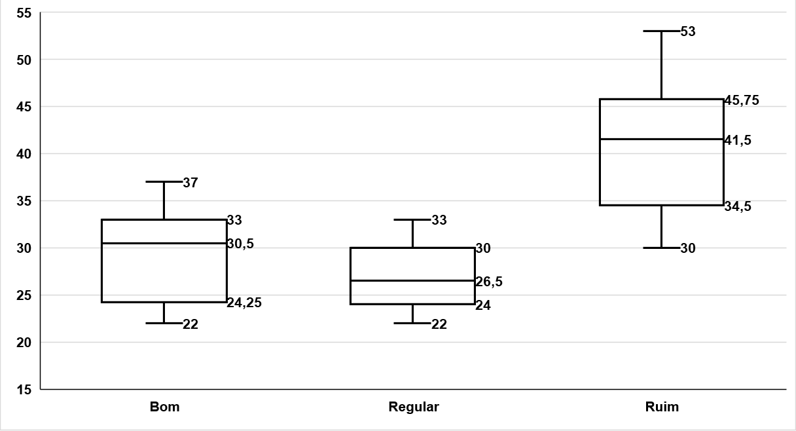
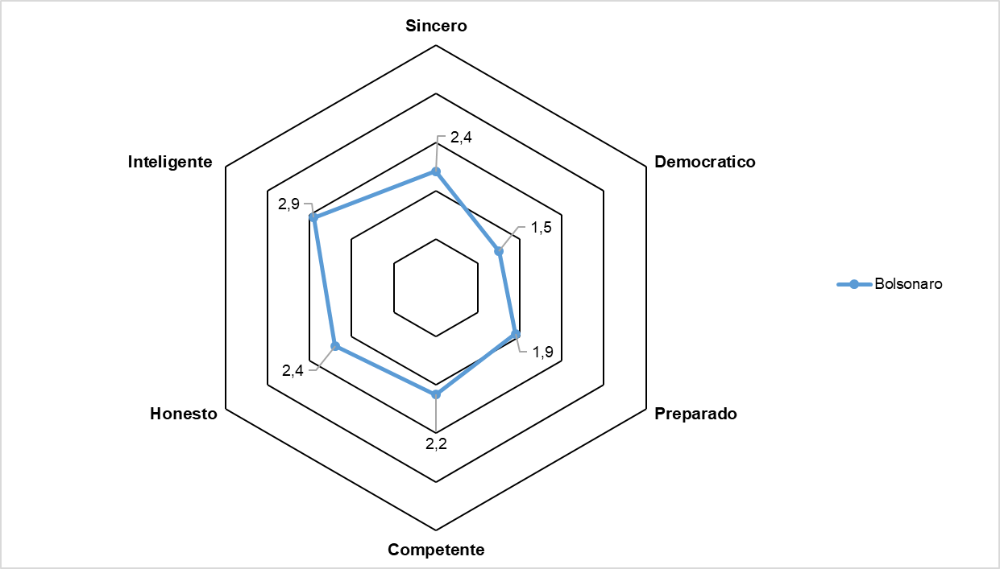

Análise de Dados da Avaliação da População Sobre o Governo Executivo Federal
Metodologia DataFolha
Técnica:Pesquisa qualitativa, realizada através de ligações telefônicas, em queo entrevistado ouve perguntas gravadas e responde através do teclado do aparelho celular.
Amostra:Foram realizadas 2.556 entrevistas, em 181 municípios. A margem de total da amostra é de 2 pontos percentuais, dentro do nível de confiança de 95%.
Abrangência:Brasil
Universo:População brasileira de 16 anos ou mais.
Data do campo:O campo foi realizado entre os dias 22 e 23 de março de 2022.
Metodologia PoderData
Técnica:Pesquisa qualitativa, com abordagem pessoal. Realizada através de um questionário, com 25 minutos de duração.
Amostra:Foram realizadas 3.000 entrevistas, em 265 municípios. A margem de erro é de 2 pontos percentuais, para mais ou para menos, dentro do nível de confiança de 95%.
Abrangência:Brasil
Universo:População brasileira de 16 anos ou mais.
Data do campo:O campo foi realizado entre os dias 13 a 15 de março de 2022.
Tabela de Dados
Fonte: Datafolha
Diagrama de Caixa
Fonte: Datafolha
Grafico de Linhas
Fonte: Datafolha
Grafico de Pizza
Fonte: Datafolha
Grafico de Colunas
Fonte: Datafolha
Diagrama de Sankey
Fonte: Jota
Grafico de Radar
Fonte: PoderData
Referencial Teorico
Castro. J. Qual a intenção de voto de quem elegeu Bolsonaro no segundo turno em 2018?. Disponível em: https://www.jota.info/eleicoes/pesquisa-intencao-voto-de-quem-elegeu-bolsonaro-segundo-turno-2018-21032022. Acessado em: 29 mar. 2022.
DataFolha. Reprovação ao governo Bolsonaro cai de 53% para 46%. Disponível em: https://datafolha.folha.uol.com.br/opiniaopublica/2022/03/1989370-reprovacao-ao-governo-bolsonaro-cai-de-53-para-46.shtml. Acessado em: 28 mar. 2022.
Folha de S.Paulo. Maioria dos brasileiros considera Bolsonaro pouco inteligente, aponta DataFolha. Disponível em: https://www1.folha.uol.com.br/poder/2020/06/maioria-dos-brasileiros-considera-bolsonaro-pouco-inteligente-aponta-datafolha.shtml. Acessado em: 29 mar. 2022.
Roscoe, B. Avaliação do governo Bolsonaro volta a piorar, mostra PoderData. Disponível em: https://www.poder360.com.br/poderdata/avaliacao-do-governo-bolsonaro-volta-a-piorar-mostra-poderdata/. Acessado em: 28 mar. 2022.